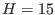

Next: Seagrass canopy dynamics Up: Idealised scenarios Previous: Some entrainment scenarios Contents
In this idealised experiment, an estuarine circulation is simulated, mainly in order to demonstrate how to use tracer advection and internal pressure gradients in GOTM, but also to show the basic physical process of tidal asymmetries and its impact on SPM dynamics.
The average water depth is  m, the model is run for 10 days.
The forcing is a M tide (of period 44714 s) which prescribes
sinusoidal time series for the vertically averaged momentum in
west-east direction with an amplitude of 1.5 ms
tide (of period 44714 s) which prescribes
sinusoidal time series for the vertically averaged momentum in
west-east direction with an amplitude of 1.5 ms and an offset
of 0.05 ms
and an offset
of 0.05 ms directed to the west in order to simulate river
run-off. The surface elevation is sinusoidal as well with an
amplitude of 1 m and a phase shift of 1.5 hours compared to the
velocity. A constant in time and space horizontal west-east salinity
gradient of -0.0005 pptm
directed to the west in order to simulate river
run-off. The surface elevation is sinusoidal as well with an
amplitude of 1 m and a phase shift of 1.5 hours compared to the
velocity. A constant in time and space horizontal west-east salinity
gradient of -0.0005 pptm is prescribed, advection of salinity
is turned on. In order not to obtain negative salinities, relaxation
to the initial salinity profile of 15 ppt is made. In order to avoid
strong stratification near the surface, a small wind stress of 0.01027
N/m is applied.
is prescribed, advection of salinity
is turned on. In order not to obtain negative salinities, relaxation
to the initial salinity profile of 15 ppt is made. In order to avoid
strong stratification near the surface, a small wind stress of 0.01027
N/m is applied.
A simple suspended matter equation with constant settling velocity is calculated in order to show the effect of tidal asymmetries on SPM transport. It is clearly seen that during flood SPM is mixed higher up into the water column than during ebb, an effect which has been described by Geyer (1993).
It is recommended to go through the description in the routines computing the external and internal pressure gradients, see section 3.7 and section 3.8, to understand the corresponding settings in the input file obs.nml. The relaxation scheme for salinity is described in section 3.11. Essential for this case is also the parametrisation of horizontal advection, which is set in obs.nml and described in section 3.11. Note that horizontal advection is calculated from the same horizontal salinity gradient that causes the internal pressure gradient.
The result is that estuarine circulation is set on and near bed residual velocity is directed upstream. It is interesting to have a look into the resulting buoyancy production or Brunt-Väisälä frequency. The effect of lateral advection on stratification leads to either production or supression of turbulence, and thus to an asymmetric time series of the turbulent diffusivity.
For two-dimensional simulations of estuarine circulation, see e.g. Burchard and Baumert (1998) and Burchard et al. (2004).